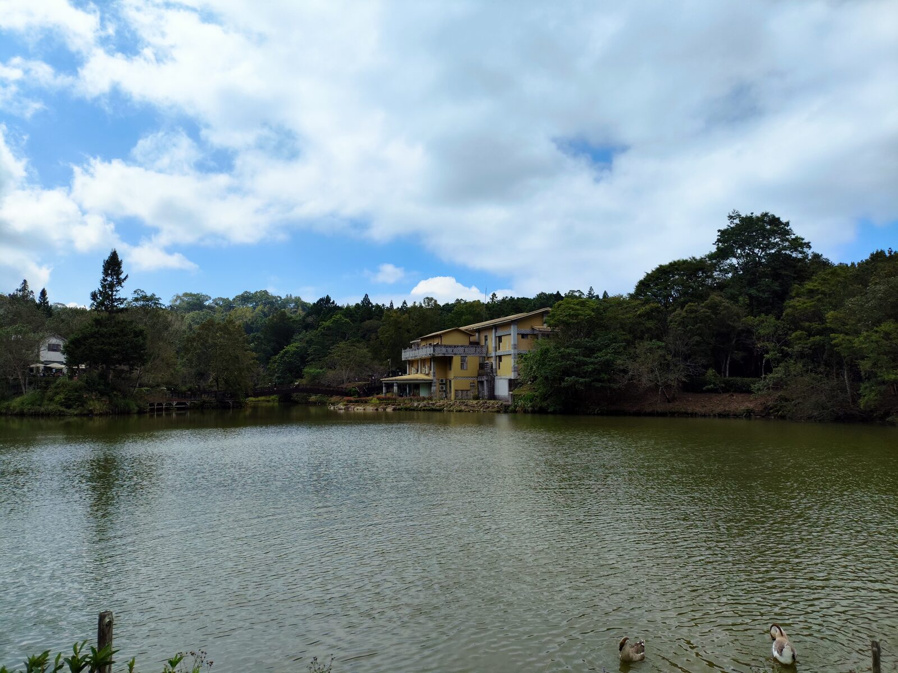
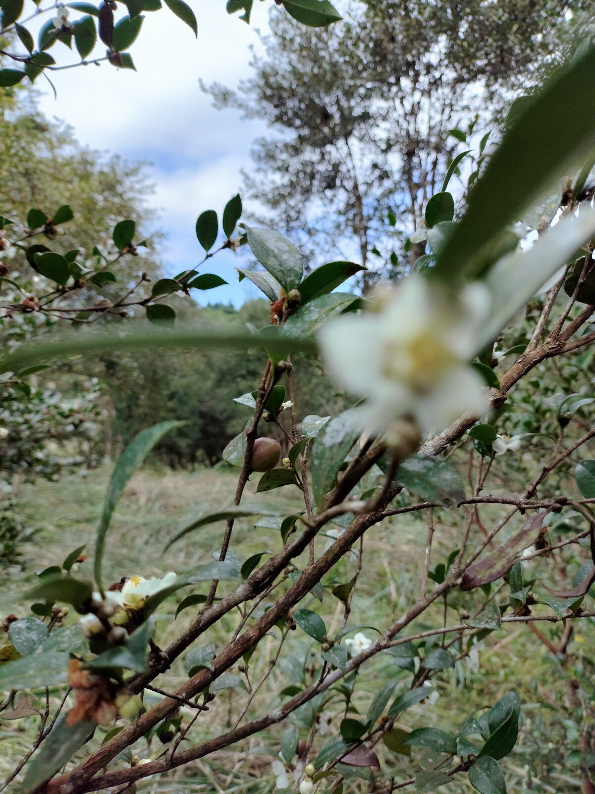
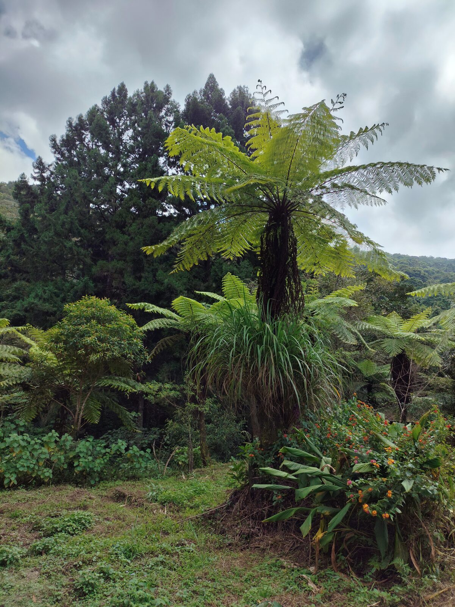
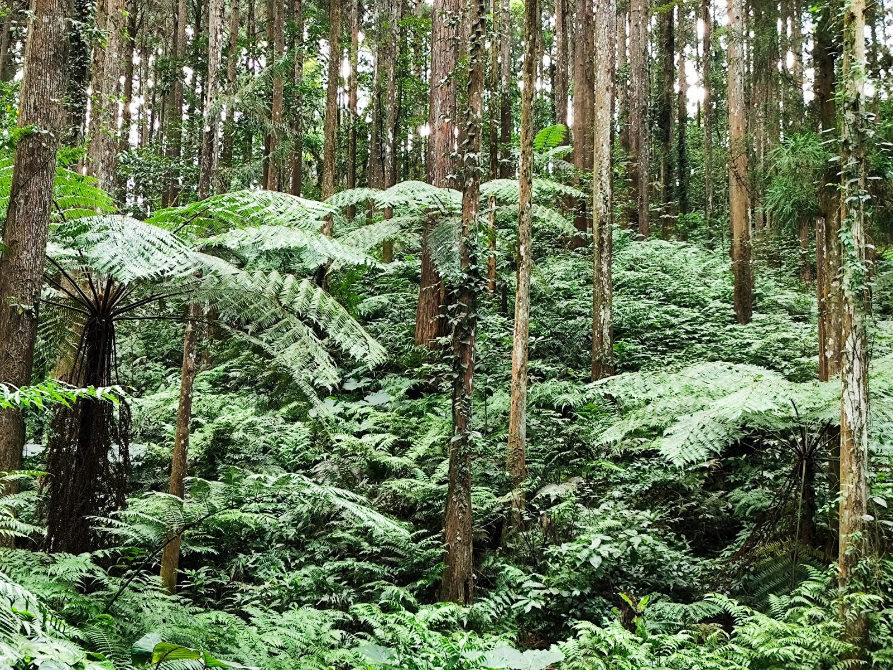
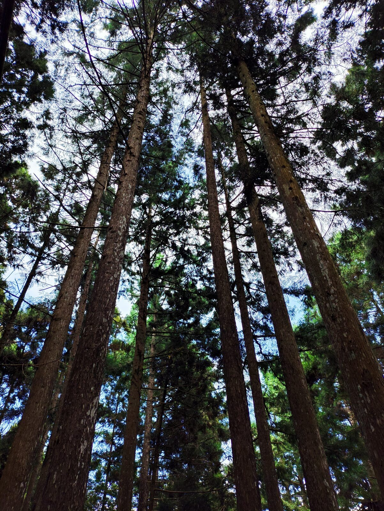
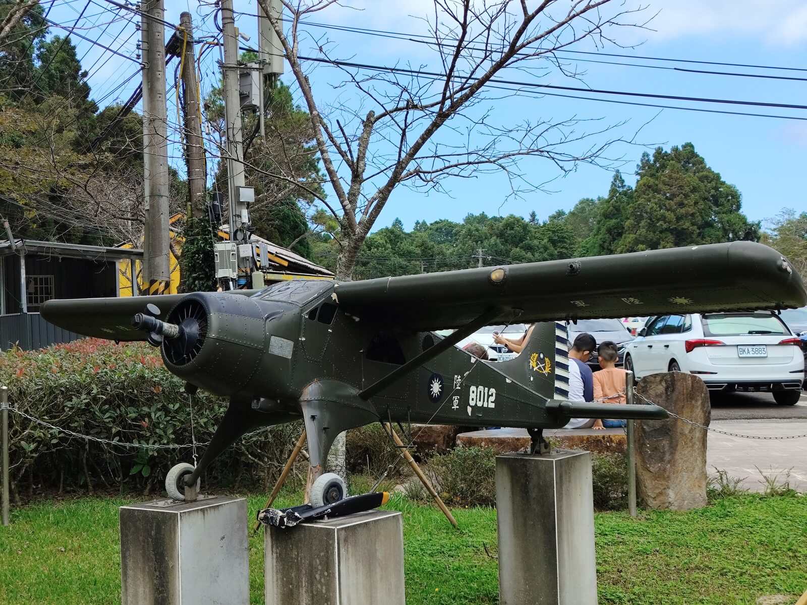
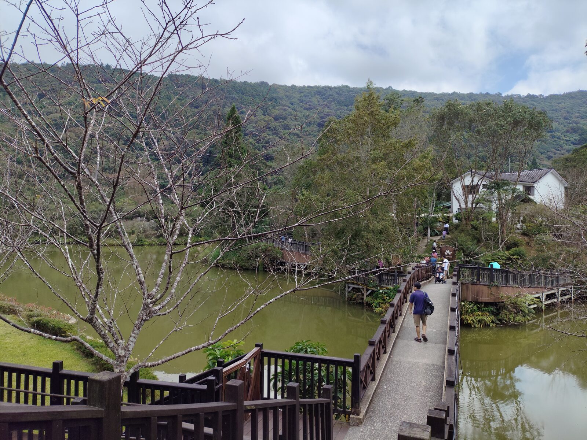
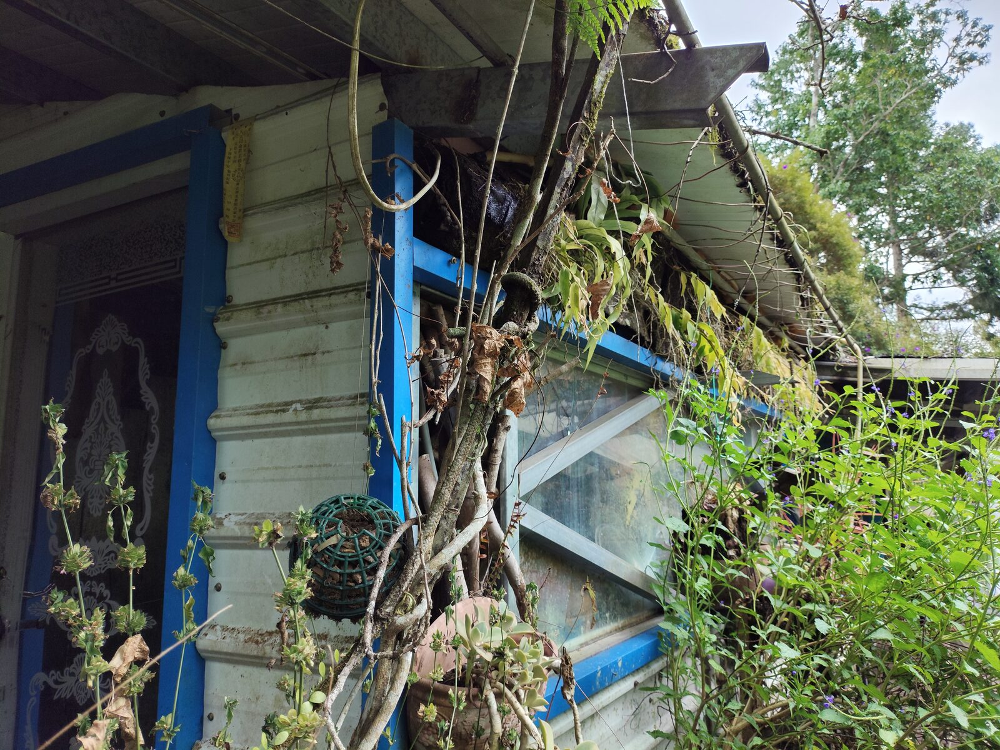

南庄街上人聲與腳步聲此起彼落，再往上到向天湖，空氣忽然涼了下來。湖面寬闊而安靜，雲影在水上慢慢移動，幾隻水鳥在近處游著。這裡和街上的熱鬧，像兩個不同的世界。


沿著外圍的綠色步道走，兩旁是苦茶樹，開著細白的花，枝上還掛著果實。再往裡走，樹蕨撐起一整片綠。行走其間，步調自然慢了下來。

外環步道進入更深的林間。蕨類鋪滿坡地，樹幹筆直向上，光從枝葉縫隙漏下來。充滿芬多精的森林，像把一身塵土與噪音都洗過一遍——適合慢慢走，也適合停下來呼吸。


林道附近，有一架深綠色的舊軍機停在座上，機身寫著「陸軍 8012」。它不再起飛，卻成為路邊一個安靜的標記，讓人多停幾步。

走回向天湖，在小島上靜靜看著湖面與山色的變化。偶爾傳來幾聲水鴨、鵝的叫聲。木橋跨過湖灣，通往對岸的民宿與咖啡店；山色一層一層推遠，湖面把整片天光與山影都收了進去。

步道上還有一間被藤蔓與綠葉包起來的小屋，藍框的窗、鏽了的鐵皮簷。植物從屋簷長出來，像是房子也慢慢變成了風景的一部分。
地如其名——向天湖，湖面印著天光，給了人們一段脫離世俗的時光。
PLACE NOTE / 南庄・向天湖
向天湖位於苗栗南庄，為賽夏族生活區域附近的高山湖泊，周邊有外環步道、咖啡民宿與森林浴路線。路況與開放資訊請以出發前公告為準；秋冬季節山區氣溫較低，建議備薄外套。
文章與照片為本次旅行的個人記錄。